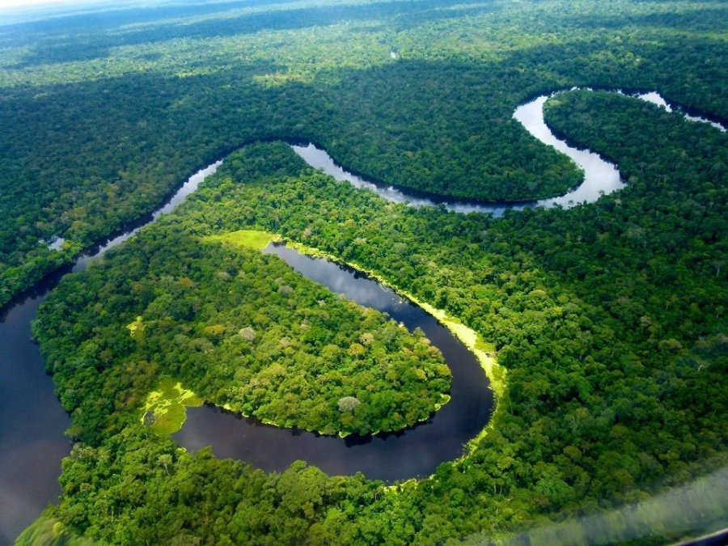

Río Ucayali

🧾 Ficha Técnica
Ubicación:
Sierra y selva central del Perú
Longitud:
1,771 km
Origen:
Formado por el río Apurímac
Importancia:
Afluente principal del Amazonas
Dato curioso:
Es navegable y vital para la economía local.
← Volver